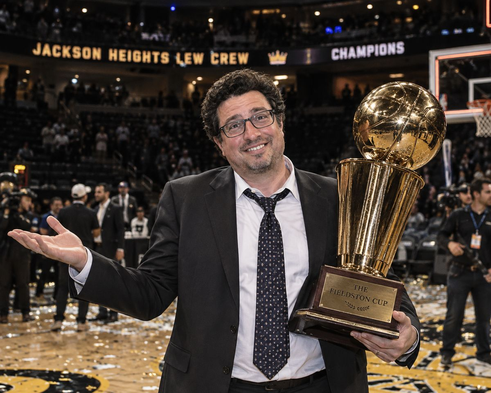
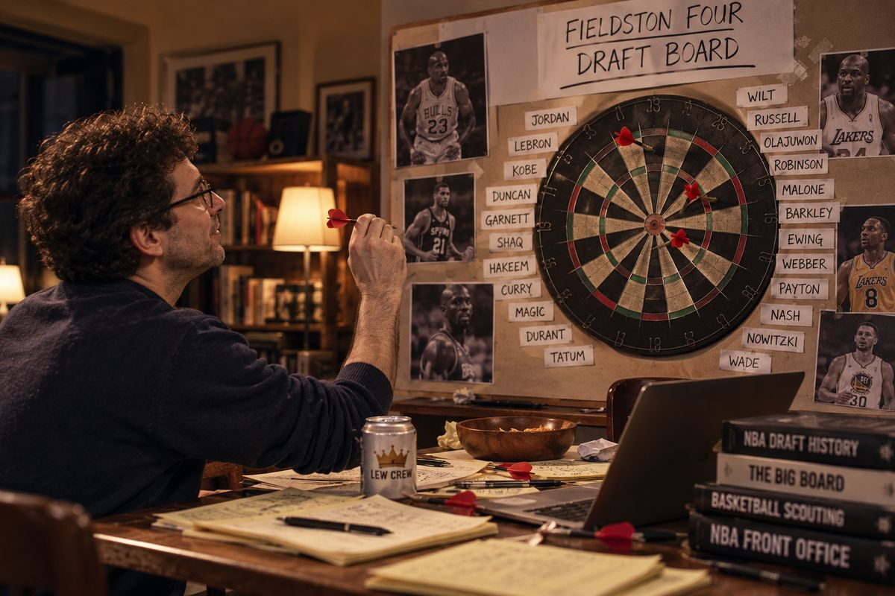
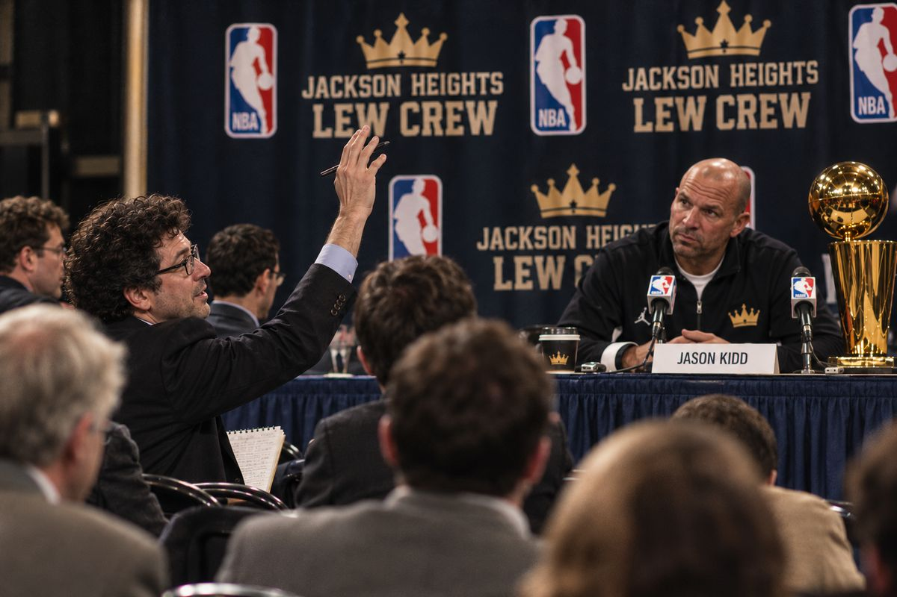
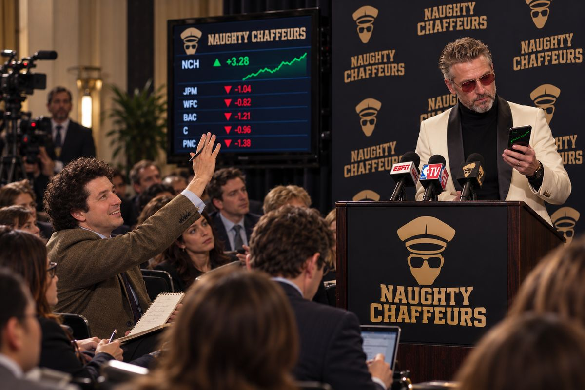
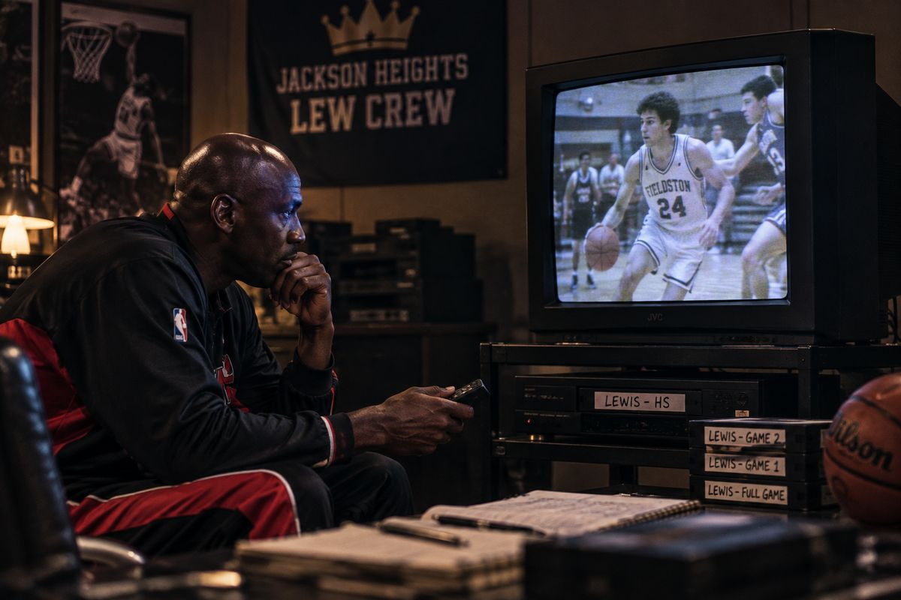
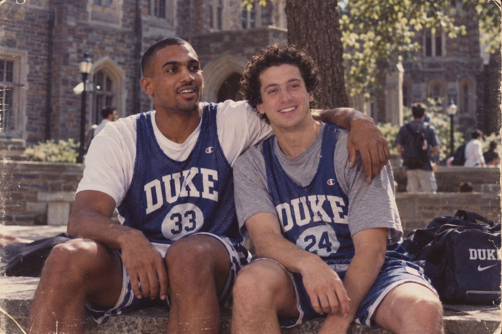
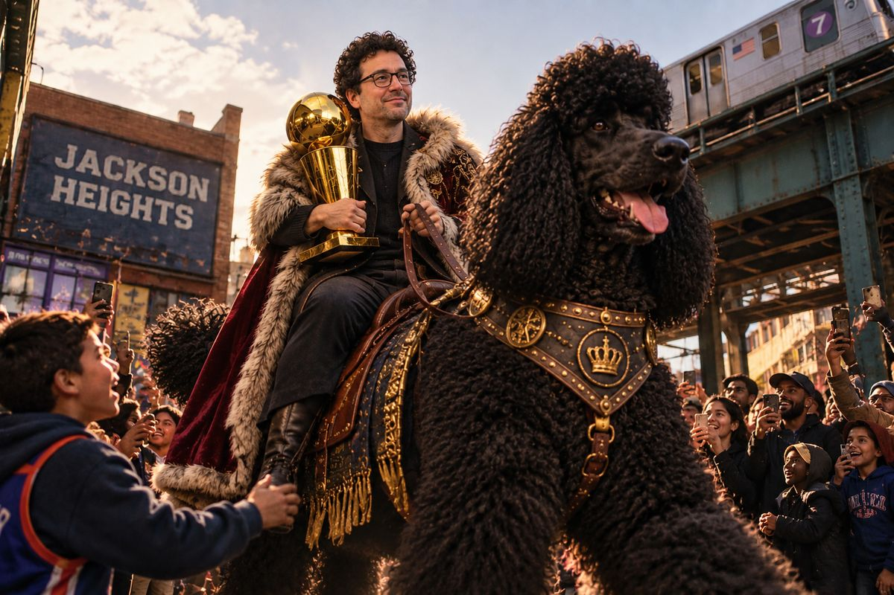

Vol. II · No. 1 · Season Preview Edition
The Fieldston Dispatch
All the Legends That Are Fit to Print
Season Preview · Owner Profile
“I Have No Idea How This Works”
He won 55 games and the league’s first title while insisting he was guessing. Inside the accidental dynasty of Lewis, the champion owner who never stopped asking questions.
 By Lois Kranberries · Dispatch Staff Writer
By Lois Kranberries · Dispatch Staff Writer
Jackson Heights, N.Y. — Basketball keeps a private ledger of the joints that changed everything. Bill Walton’s feet. Grant Hill’s left ankle. Penny Hardaway’s knee. The entries are written in the large, mournful print of what might have been, and every fan knows a few of them by heart.
Farther down, in smaller type, there is a high school gym and a senior-year team captain who went up one afternoon and came down wrong. The knee went. The season went with it. And the career his friends still discuss in the conditional tense — he could have, he would have — slipped quietly into the ledger.
That captain is Lewis, owner of the Jackson Heights Lew Crew. Last season he built the most dominant operation this league has ever seen.
Jackson Heights finished 55-29, the best record in the league and seven games clear of the field. It eliminated San Francisco 3-Deep in the semifinals, then dismantled Jess Gangi’s Flamington Tuxedos 4-1 in the finals to claim the league’s first playoff championship. His second club, Queens Lew Crew 2, Electric Boogaloo, went 47-37 and finished third. Between them, Lewis’s two franchises went 102-66, a .607 clip, and no team in the league finished closer than seven games to his best one.
Ask him how he did it and you get the same answer every time.
“I really have no idea how this works,” Lewis said. “I’m just guessing and taking the best players.”
The Model and the Man
The league’s analytical class spent a full season trying to prove that answer insufficient. One rival owner, who requested anonymity on the grounds that his 17-67 San Francisco club remains a sensitive subject in his own household, built a Game Score model, tracked plus-minus by hand, and argued all year that versatile two-way wings, not scorers or size, are what actually win.
His teams finished seventh and eighth.
Lewis, meanwhile, put Michael Jordan, Julius Erving, Dominique Wilkins, Kareem Abdul-Jabbar and Jason Kidd on the floor and won the whole thing.
“We ran his draft through everything,” said Leonard Kasprzak, who publishes a basketball analytics newsletter with eleven subscribers, four of them relatives. “Usage, on-off splits, lineup synergy. The model’s conclusion was that he took the best players. Frankly, we were hoping for more.”

Lorna Kettleworth, a longtime league observer, was more charitable. “Everybody keeps looking for the system,” she said. “Sometimes the system is that the man has watched an enormous amount of basketball.”
“When the knee took the game away from him, the questions didn’t stop. He just pointed them at everybody else.”
Khary Lazarre-White, co-captain
The Co-Captain
To understand where it comes from, you have to go back to the gym. Lewis was not the only captain that year. He shared the job with Khary Lazarre-White, one of his closest friends then and now.
Last season, Lazarre-White’s phone rang. On the line was Kareem Abdul-Jabbar, then the starting center for Jackson Heights, doing a little reporting of his own.
“He’d been getting questions from his owner all season — about the skyhook, about Wooden, about everything — and he wanted to know where it came from,” Lazarre-White said. “I told him Lewis was always like that. When we were captains, he was the one asking why. Why this defense, why that rotation, why we were running the play we were running. When the knee took the game away from him, the questions didn’t stop. He just pointed them at everybody else.”
He paused. “People think he got lucky. He’s been studying this game since we were kids. He just won’t tell you that, because he’s too busy asking you something.”
A Seat in the Second Row
Those questions explain one of the stranger developments in league history: an owner in the press corps.
At Jackson Heights news conferences, Lewis sits in the second row with a notebook, raising his hand alongside the beat writers and asking his own players follow-ups. It is a disorienting thing for a reporter to raise a hand and watch the man who signs the checks raise his first.

“There’s no rule against it,” said Commissioner Jess Gangi, whose Tuxedos lost the finals to Jackson Heights in five games. “I checked. Then I checked again.”
The curiosity does not stop at his own locker room. At a Laurel Canyon Naughty Chauffeurs availability last season, Lewis rose to question “Mogul Mike” — not about his rotation, but about his portfolio. Exposure to regional banks. His position on commercial real estate. Whether he was overweight in anything.

“I came here to talk about my rotation,” Mike said afterward. “He wanted to talk about my rotation out of tech.” Mike declined further comment, citing a quiet period.
The Tape
There is one more story about Lewis that circulates around the league, and it involves the most famous player he has ever employed.
Midway through last season, according to a Jackson Heights staffer, Jordan heard about the knee and asked whether there was any tape. Equipment manager Lyle Kowalczyk found an old VHS cassette. Jordan watched it twice in the film room, rewound it, and handed it back.
He did not say anything. He nodded once.
“I’ve seen him do that maybe twice,” Kowalczyk said. “Both times, the other guy made the league.”

The Sequel
Lewis enters the new season as the champion in a league that has changed the rules on him. Head-to-head play is now decided across eleven categories, layered on top of a full simulated season, and for the first time injuries are switched on.
Jackson Heights Lew Crew
- GFMichael JordanStarter
- FCKevin GarnettStarter
- SFDominique WilkinsStarter
- FCTim DuncanStarter
- PGBob CousyStarter
- GFGrant HillBench
- FAndrei KirilenkoBench
- SGPete MaravichBench
- FCPatrick EwingBench
- GLuka DončićBench
- FCBob McAdooBench
- GAllen IversonBench
2025–26 Final Standings
- 1Jackson Heights Lew Crew55-29
- 2Laurel Canyon Naughty Chauffeurs48-36
- 3Queens Lew Crew 2, Electric Boogaloo47-37
- 4L.A. Magic Wiltworthy Kobronabitches47-37
- 5Flamington Tuxedos45-39
- 6Blankendorf Monstrosities39-45
- 7Oakland Paint Patrol38-46
- 8San Francisco 3-Deep17-67
Finals: Jackson Heights def. Flamington, 4-1.
The defending champions return two pillars, Jordan and Wilkins, and little else. Kareem, Erving and Kidd are gone. In their place is an almost entirely new frontcourt: Kevin Garnett and Tim Duncan starting up front, Bob Cousy running the point, and a bench of Grant Hill, Andrei Kirilenko, Pete Maravich, Patrick Ewing, Luka Dončić, Bob McAdoo and Allen Iverson.
Here the analytical class received its cruelest news of the offseason. Garnett, Duncan, Kirilenko and Hill are precisely the long, two-way, do-everything players the anonymous owner’s model spent a season begging for. Kirilenko was, in fact, one of that owner’s own pickups last year. He now wears Jackson Heights blue.
Asked whether he had read the two-way-wing thesis, Lewis said he had not. “Kirilenko’s good,” he said. “He does a lot of stuff.”
The risk lies on the bench. Maravich, Iverson, McAdoo and Dončić will pile up points and threes, but in an eleven-category format they also put field-goal percentage and turnovers on the table every night. “In eleven-cat,” Kasprzak said, “Iverson and Pistol are a turnover category with legs.”
And then there is Hill. In a season with injuries for the first time, Lewis spent a pick on the player whose ankle occupies one of the saddest lines in the ledger. It was not the first time their paths had crossed. Lewis and Hill were at Duke at the same time, and they sat in the same history of music class.

At Hill’s introductory news conference, Lewis raised his hand from the second row. The question was not about the ankle, or minutes, or the eleven-category implications of a point forward off the bench. It was about the music class. Hill laughed, stepped away from the podium and walked to the second row to shake his owner’s hand. No one present could recall a player leaving the podium to answer a question in person.
Whether the pick was a basketball decision or something else, Lewis was not asked. Some questions belong to the man who asks them.
Electric Boogaloo, his 47-37 second act, returns for a sequel of its own.

The God in the Doghouse
When a method resists explanation, rivals eventually reach for the supernatural. In this league, that means Kippy.
Kippy was a black poodle Lewis loved without reservation, and, depending on who is telling the story, one large enough to ride. For years, a strain of league lore has held that Kippy was not a dog at all but a Norse god. Norse mythology records that Odin kept two wolves at his feet. It records no poodles, though scholars concede the sagas are incomplete.
Mogul Mike has gone further than most. “Kippy was evil,” he said. “I’ve said it for years. I’ll say it under oath.”
Lewis has never engaged the theory. He loved that dog. That is the whole of his position on the matter.
“I’m not going to tell you Kippy wasn’t a god,” Lazarre-White said. “I’m going to tell you Lewis treated him like one.”
The Ledger
Basketball’s ledger has an entry for a senior captain’s knee. It has none for what came after: the questions, the notebooks, the second-row seat, the 55 wins, the trophy.
That part, Lewis insists, he is still figuring out.
“I really have no idea how this works,” he said.
The rest of the league has stopped believing him. ■